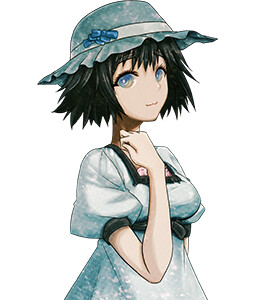
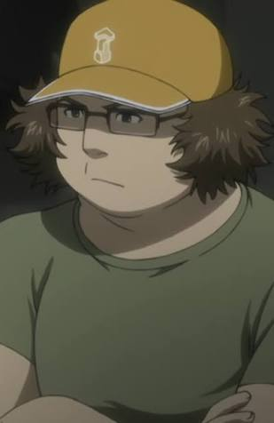

Nombre de la serie: Steins;Gate
Año de estreno: 2011
País de origen: Japón
Género(s): Ciencia ficción, thriller, drama
Nombre de los creadores: Chiyomaru Shikura (historia original), Jukki Hanada (guion)
Steins;Gate sigue la historia de Rintarou Okabe, un autodenominado científico loco que junto con sus amigos accidentalmente descubren una forma de enviar mensajes al pasado a través del tiempo y causar alteraciones en la línea temporal.

| Nombre | Foto | Rol en la serie |
|---|---|---|
| Rintarou Okabe | El protagonista principal, un científico autoproclamado loco que descubre la capacidad de enviar mensajes al pasado. | |
| Kurisu Makise | Una brillante neurocientífica que se encuentra involucrada en los experimentos de viaje en el tiempo de Okabe. A menudo se la conoce como "La Genio Loca" por su inteligencia y actitud sarcástica. | |
| Mayuri Shiina |  | La amiga de la infancia de Okabe y una parte fundamental de su círculo social. A menudo se la describe como inocente y cariñosa, y tiene un papel crucial en la trama debido a su relación con Okabe. |
| Itaru Hashida |  | Más conocido por su apodo "Daru", es un experto en tecnología de la información y un miembro clave del laboratorio de Okabe. Es el encargado de la mayoría de las operaciones técnicas y de hacking del grupo. |